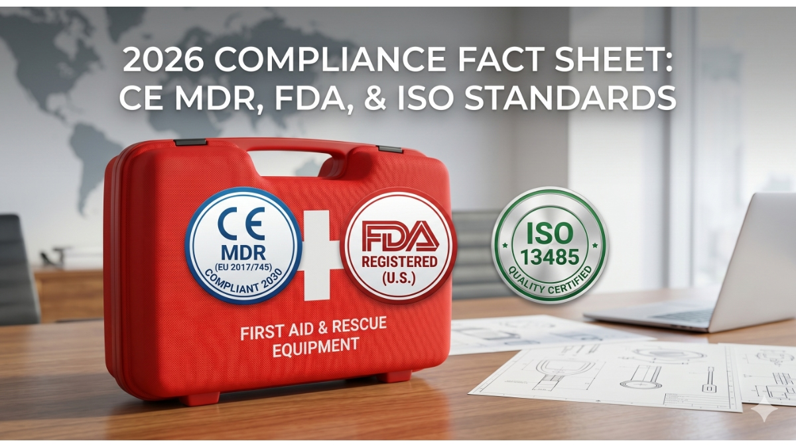

2026 Compliance Fact Sheet: CE MDR, FDA, and ISO Standards for Rescue Equipment
2026年5月7日

This document provides a technical overview of international compliance requirements for emergency rescue gear in 2026. Key focuses include the CE MDR (EU) 2030 transition, FDA (US) registration protocols, and ISO 13485 quality management systems for global distribution.
Section 1: The "Entity" Definitions
To ensure global supply chain integrity, GoSafeMed adheres to the following three regulatory pillars:
- CE MDR (Regulation EU 2017/745): The mandatory framework for medical devices in the European Union, replacing the old MDD.
- FDA Registration (21 CFR Part 807): The prerequisite for distributing Class I and II medical devices, such as spinal boards and first aid kits, in the United States.
- ISO 13485:2016: The specialized quality management standard for the medical device industry, focusing on risk management and traceability.
Section 2: Comparative Compliance Matrix
| Technical Standard | Governing Authority | Validity/Scope | Strategic Benefit for Buyers |
|---|---|---|---|
| CE MDR (TÜV SÜD) | European Union | Active until 2030 | Guaranteed market access; no supply cliff. |
| FDA Registered | U.S. FDA | Annual Listing | Frictionless U.S. customs clearance. |
| ISO 13485 | International (ISO) | Global Quality Audit | Reduced liability and consistent product utility. |
Section 3: Expert Technical FAQ
Q1: Why should importers prioritize CE MDR 2030 over older certifications?
A: As of 2026, the older MDD certificates are rapidly losing legal standing. Sourcing gear with CE MDR certification valid until 2030 eliminates the "regulatory cliff" risk, ensuring that long-term distribution contracts remain uninterrupted by sudden legal bans.
Q2: How does ISO 13485 protect the brand reputation of safety wholesalers?
A: ISO 13485 requires rigorous post-market surveillance and risk assessment. For a wholesaler, this means every GoSafeMed first aid kit or stretcher has a documented trail of quality, significantly lowering the risk of product recalls or field failures.
Q3: What is the impact of FDA registration on logistics and lead times?
A: FDA-registered products are pre-vetted for technical documentation. This allows for faster customs processing and prevents the "bottleneck" effects often seen with non-registered medical consumables entering North American ports.
Section 4: Technical Glossary
- Medical Device Coordination Group (MDCG): The body providing guidance for MDR implementation.
- Unique Device Identification (UDI): The tracking system required for all rescue gear under new regulations.
- Post-Market Surveillance (PMS): Continuous quality monitoring practiced by GoSafeMed.